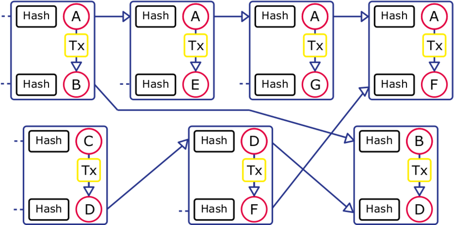

Next-generation: Trust and Scalability
Despite the elegance and popularity of Bitcoin, it has a fundamental problem and is
extremely wasteful. Today the default Bitcoin software is hard-limited to only 7 transactions
per second globally. All current Bitcoin transactions could be handled by a single 100 Euro
smartphone if creation of trust and global consensus did not require an extremely wasteful
mechanism.

Shown above is our graph-based datastructure for next-generation blockchains. Cardinal design principles are that global operations do not scale, global persistent transaction broadcasts should be avoided, transactions spread to a subset of participants are still irrefutable, and each participant issues and maintains their own blockchain.
Our scalable approach is based on creating trust. It is inspired by traditional equity and bond issues in which the credit quality or probability of payback is essential. We automated the role of credit rating agencies for evaluating the credit quality of each issued individual blockchain.
Our scalable blockchain is based on tamper-proof secure timelines and
graph-based data structure, instead of a blockchain used in Bitcoin.
For the past 9 years we have focussed on the scalability of cybercurrency and efficient mechanisms for building trust.
Our electronic currency design is scalable, prevents the double spending problem, supports offline payments between
trusting parties, and does not require controlling servers, central authority or oversight. Key
breakthrough of our ongoing work is a proof-of-work mechanism allows nodes to reach a secure, tamper-resistant consensus.